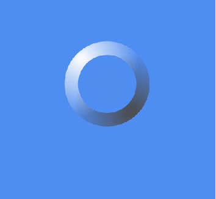
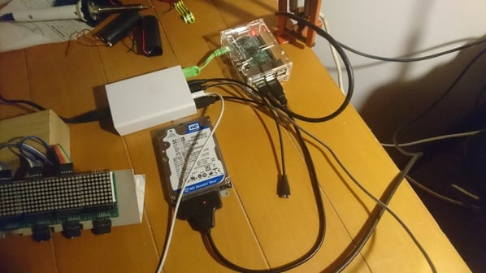

Vabbuo.it

One day quite some time ago I got a flat Internet connection at home. It was very exciting and all, but after spending some
time on videos of people getting hurt I was quickly bored. I had the hole world at the reach of that white bar that the
blinking cursors seemed like a timer counting how much time I didn't spend searching for stuff. So I searched for something
random. Com'on I already searched my name, so what? In italian "boh" is something like "No Idea" or "I don't know", a sort
of "Meh...". So I searched for "boh" on the italian Google and the first result was for a site -
boh.it - which claimed to be the first "site" where there is nothing. For some reason I fell in love with it, the first
thing welcoming you was a light blue page with a big dark blu round button in the middle of it. I mean imagining to enter
it the first time the experience is quite confusing. What is this thing? Because you where actually expeting something from
a site named "boh"? It was simply a discovery. Satisfying the curiosity of clicking on the button you where redirected to
a page explaining the phylosophy of the thing, along a with a simple form that asked for an email and a message. Sometimes
I filled it up and submit it but never got a response, maybe I got some more spam instead. Sadly from the beginning of summer
boh.it is down, probably because the owner got tired of paying for the hosting.
 Anyway in the years I used
boh.it for testing Internet connection and I really felt like missing a tool when became unreachable. In the same period
I was starting an internship in a web development company so I got an idea about filling that unbearable hole in the World
Wide Web. By the why through WHOISing the URL I tryed to contract the domain owner by I got no response and the domain expires
in 2018 so, you know, things might be happen. I bought the
vabbuo domain and dove into this new world, since I actually never got a formal education in web development. The underlining
idea was still the same: something completely useless but with a pretentious meaning. The button is still there, but green
instead. Unexpectedly senteces snow from the top to make your life much better and the background changes color smoothly
you know man, great stuff. Accordingly the form know lets you submit new senteces along with some other information.
Anyway in the years I used
boh.it for testing Internet connection and I really felt like missing a tool when became unreachable. In the same period
I was starting an internship in a web development company so I got an idea about filling that unbearable hole in the World
Wide Web. By the why through WHOISing the URL I tryed to contract the domain owner by I got no response and the domain expires
in 2018 so, you know, things might be happen. I bought the
vabbuo domain and dove into this new world, since I actually never got a formal education in web development. The underlining
idea was still the same: something completely useless but with a pretentious meaning. The button is still there, but green
instead. Unexpectedly senteces snow from the top to make your life much better and the background changes color smoothly
you know man, great stuff. Accordingly the form know lets you submit new senteces along with some other information.

Touching instead some technicalities, the welcome page is essentially made from two canvas elements, one to draw the button,
always centered in the page with some CSS magic, and the other covering the whole page where the sentences are contantly
redrawn. Two Javascript classes take care of the senteces in a master-slaves fashion, the master is given the instruction
of how many senteces we need and he instanciates them keeping a reference in an array. Through requestAnimationFrame a drawAll
method of the master class is called periodically which clears the canvas and calls all the draw methods of the slave classes
which each one redraws itself advancing then in position. When a sentence gets under the screen it is time to create a new
one, requesting a sentence to the server and then recalculate all the dimensions.
Server-side there is not much going on, mostly logging statistics and moving data in or out the database. Maybe the most
interesting part about the server is that it runs on a headless RaspberryPi connected to my home ADSL. The server
serves
this very site too, not without struggle, but it works for the low traffic we are talking about. The Afraid Dynamic DNS is
used, great project by the way.
The code can be found on GitHub and for question you can use the form in the bio page.